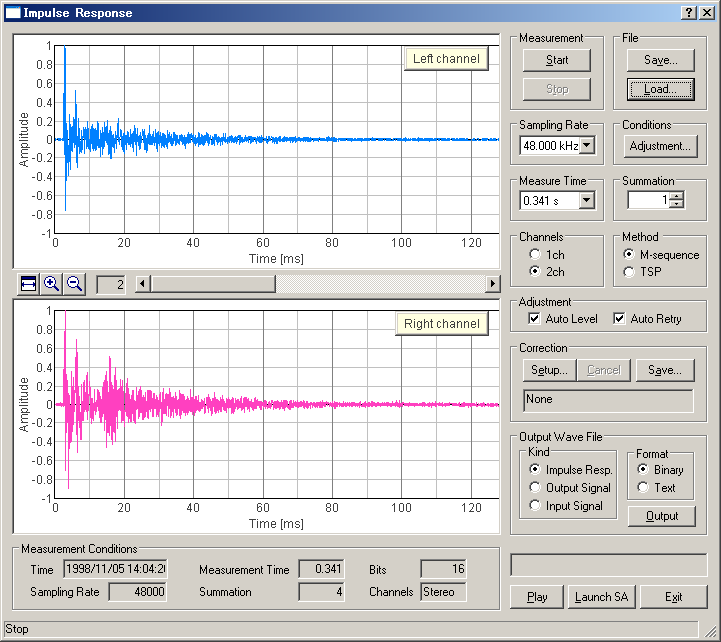

DSSF3 > RA > Reference Manual > Impulse Response

| Field | Description |
|---|---|
| Measurement | The measurement starts with [Start] button. Though the measurement finishes automatically, you can stop it with [Stop] button. |
| File | [Save...] button: Saves the data measured here. See: Save measurement data [Load...] button: Loads the data stored previously. See: Load measurement data |
| Sampling Rate | Available sampling rates of the sound card used are displayed. |
| Conditions | [Adjustment...] button: Input / output level, microphones position, measurement time are adjusted automatically. See: Adjustment |
| Measure Time | The time duration for measuring the impulse response. It is automatically adjusted. |
| Summation | The number of times that the measured impulse responses are added and averaged out. If this number becomes larger, S/N ratio is improved. But the time duration becomes longer. |
| Channels | Choose stereo (= 2 channels) or monaural (= 1 channel). |
| Method | The MLS method and the TSP method can be used in the impulse response measurement. It can be used only by choosing one of the MLS and the TSP. TSP is a signal in which the energy of an impulse is distributed on the time axis. In the TSP method, an impulse response is calculated by generating TSP signal, acquiring the response and returning the dispersed energy. |
| Auto level | It is adjusted so that an output level can become the most suitable. (The output signal is amplified within the range that the input doesn't become saturated, and S/N ratio is improved.) If you turn "Auto Level" off. You can adjust the sound volume (output level) using Windows sound volume control. |
| Auto Retry | Measurement will be repeated until distortion-free data can be obtained. You can release it at your option by switching on/off. |
| Correction | Unwanted response of the measurement system including microphone and loudspeaker is removed. [Setup...] button: Sets the Inverse filter. [Cancel] button: Cancels the Inverse filter. [Save...] button: Saves new Inverse filter. |
| Output Wave File | The data are saved in wave file format and text file format. |
| Play | Clicking on this enables to listen to the impulse response sound. |
| Launch SA | To analyze the measurement data to start the Sound Analyzer. |
| Exit | "Impulse Response" program is finished. |
| These buttons adjust the range of indication of impulse response. | |
| Measurement Conditions | Various conditions of the measurement are shown. (Time, Measurement Time, Bits, Sampling Rate, Summation, Channels) |
DSSF3 > RA > Reference Manual > Impulse Response